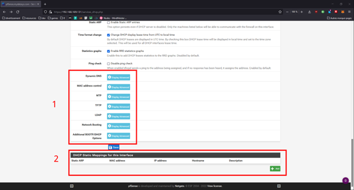

Gestion du DHCP et DNS
Pour configurer le DHCP sur votre réseau la démarche est la suivante :
Premièrement allez dans l’onglet Services puis DHCP Server.

Ensuite :
1. Activer / désactiver le DHCP
2. Vérifier que les informations correspondent bien à votre réseau
3. Choisir la plage d’ip distribuable par le DHCP
1. Ce paramètre vous permet de préciser une autre plage d’ip en plus de celle précisé précédemment.
2. Vous pouvez ici configurer les DNS qui serons attribuez automatique à vos machine utilisant le DHCP.
Vous pouvez rentrer ici la passerelle par défaut que le DHCP attribuera aux machines utilisant le DHCP.
Dans notre cas nous avons déclarer l’IP de l’interface LAN de notre pare-feu.

La partie 1 est réservé aux utilisateurs avancés, nous la précisons ici pour vous inciter à ne pas y toucher sans la présence d’un professionnelle.
La partie 2 vous permet d’ajouter des adresses au protocole ARP de votre pare-feu.